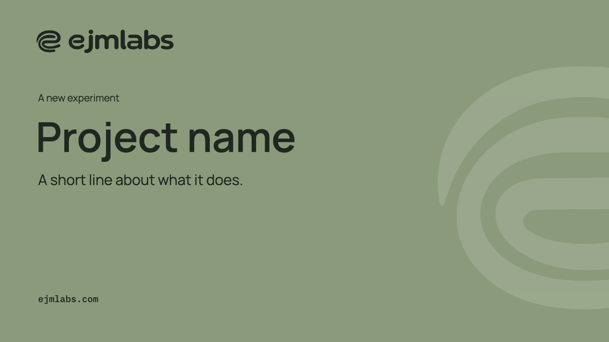
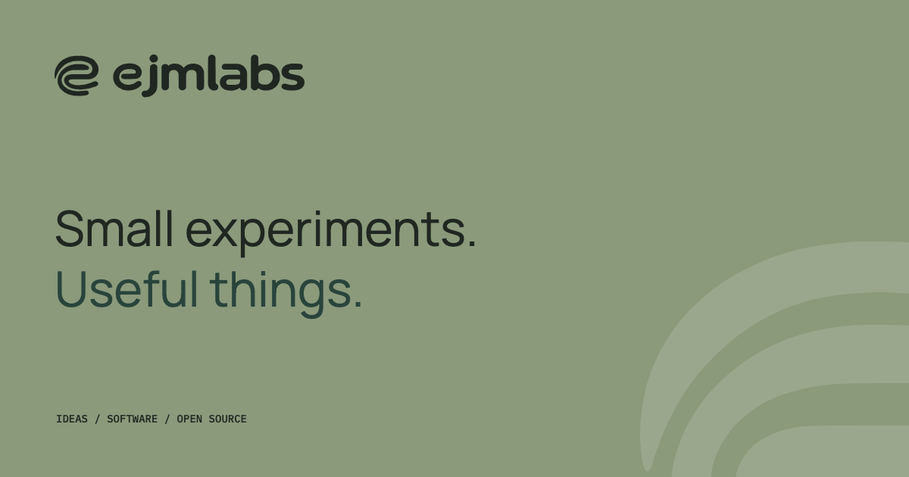

ejm-harness
A reusable Rust engine for coding agents.
About ejm-harnesssite kit
Every ejmlabs site is put together from the named parts on this page. Pick a pattern, copy its markup, write the content. There is no page CSS.
index
Each pattern has a live example, a line on when to use it, and its exact markup behind Show markup.
Heading levels inside the examples are shifted down, so this page keeps one h1.
Every product site carries a simulated, interactive demo that runs on the page.
layout
Primitives that arrange content. They carry no color of their own, so they work on any band.
--2-1 --1-2 --reverse --center
Two things that belong together, such as text beside a figure. It stacks on mobile with the first child on top.
1:1
We make small experiments, useful software and open source tools.
<div class="ejm-stack">
<div class="ejm-split ejm-split--center">
<div class="ejm-stack ejm-stack--compact"><p class="ejm-eyebrow">1:1</p><h4 class="ejm-heading">An independent studio.</h4><p>We make small experiments, useful software and open source tools.</p></div>
<dl class="ejm-status"><div><dt>project</dt><dd>ejmlabs</dd></div><div><dt>status</dt><dd>exploring</dd></div></dl>
</div>
<div class="ejm-split ejm-split--2-1"><div class="ejm-placeholder">2 : 1, wide column first</div><div class="ejm-placeholder">1</div></div>
<div class="ejm-split ejm-split--1-2"><div class="ejm-placeholder">1</div><div class="ejm-placeholder">1 : 2, wide column second</div></div>
<div class="ejm-split ejm-split--2-1 ejm-split--reverse"><div class="ejm-placeholder">2 : 1 reversed. First in the source, shown on the right</div><div class="ejm-placeholder">Second in the source, shown on the left</div></div>
</div>--2 --3 --4
Three or four like items with no frame. The plain class fits as many 240 px columns as the width allows.
A reusable Rust engine for coding agents.
A coding agent for your terminal.
A desktop IDE with an agent beside the editor.
<div class="ejm-stack">
<div class="ejm-cols ejm-cols--3">
<div class="ejm-stack ejm-stack--compact"><h4 class="ejm-card__title">ejm-harness</h4><p>A reusable Rust engine for coding agents.</p></div>
<div class="ejm-stack ejm-stack--compact"><h4 class="ejm-card__title">ejm-cli</h4><p>A coding agent for your terminal.</p></div>
<div class="ejm-stack ejm-stack--compact"><h4 class="ejm-card__title">ejm-ide</h4><p>A desktop IDE with an agent beside the editor.</p></div>
</div>
<div class="ejm-cols ejm-cols--4"><div class="ejm-placeholder">--4</div><div class="ejm-placeholder">--4</div><div class="ejm-placeholder">--4</div><div class="ejm-placeholder">--4</div></div>
<div class="ejm-cols ejm-cols--2"><div class="ejm-placeholder">--2</div><div class="ejm-placeholder">--2</div></div>
</div>--narrow
Running text capped at 68 characters a line, or 52 with the narrow modifier.
ejm-harness is the engine. ejm-cli and ejm-ide are separate apps built on it. All three are open source under the MIT license. This paragraph stops at 68 characters a line, so it stays comfortable to read on a wide screen.
<p class="ejm-measure">ejm-harness is the engine. ejm-cli and ejm-ide are separate apps built on it. All three are open source under the MIT license. This paragraph stops at 68 characters a line, so it stays comfortable to read on a wide screen.</p>One centered statement, such as a closing line, a call to action or an empty state.
An independent studio for small experiments, useful software, and open source tools.
<div class="ejm-center ejm-stack ejm-measure">
<h4 class="ejm-h2">Small experiments. Useful things.</h4>
<p>An independent studio for small experiments, useful software, and open source tools.</p>
<div class="ejm-cluster"><a class="ejm-button" href="#p-cta">See the call to action</a></div>
</div>--end --sticky
A nav or aside beside one main column. The sticky modifier keeps the side in view.
<div class="ejm-sidebar-layout">
<nav class="ejm-sidebar-layout__side ejm-sidenav" aria-label="Project sections">
<div><p class="ejm-sidenav__title">ejm-cli</p>
<ul><li><a href="#p-sidebar-layout" aria-current="page">Overview</a></li><li><a href="#p-sidebar-layout">Sessions</a></li><li><a href="#p-sidebar-layout">Permissions</a></li></ul></div>
</nav>
<div class="ejm-sidebar-layout__main ejm-prose">
<h4>Overview</h4>
<p>ejm-cli is a coding agent for your terminal. It streams the conversation, saves sessions, and lets you steer a running turn.</p>
</div>
</div>A wide figure that runs past the gutters to the edge of the page column.
Text sits inside the gutters.

The figure above reaches the column edge.
<div class="ejm-page ejm-section ejm-stack">
<p class="ejm-measure">Text sits inside the gutters.</p>
<figure class="ejm-figure ejm-bleed"><div class="ejm-figure__frame"><img src="../templates/project-sage.png" alt="A project cover: a Sage field with the ejmlabs logo and a cropped symbol" width="1600" height="900"></div></figure>
<p class="ejm-measure">The figure above reaches the column edge.</p>
</div>header and navigation
The bar above the page, the links inside it, and the small parts that show where you are.
--forest --ink
One short, true message above the header, with one link.
ejm-ide starts on macOS with Apple Silicon.
Read the detailsThe three projects are open source under the MIT license.
See the projects<div class="ejm-announce"><div class="ejm-announce__inner ejm-page"><p>ejm-ide starts on macOS with Apple Silicon.</p><a href="#p-announce">Read the details</a></div></div>
<div class="ejm-announce ejm-announce--forest"><div class="ejm-announce__inner ejm-page"><p>The three projects are open source under the MIT license.</p><a href="#p-announce">See the projects</a></div></div>--paper --forest
The bar that stays on top. Under 640 px the links fold into the Menu button, with no script.
<header class="ejm-header ejm-header--sticky ejm-header--paper">
<a class="ejm-header__logo" href="#p-header-sticky" aria-label="ejmlabs home"><span class="ejm-logo" role="img" aria-label="ejmlabs"></span></a>
<div class="ejm-header__tools">
<details class="ejm-menu">
<summary><span class="ejm-menu__label">Menu</span></summary>
<nav class="ejm-nav" aria-label="Main">
<a href="#p-header-sticky" aria-current="page">Projects</a>
<a href="#p-header-sticky">How we work</a>
<a href="#p-header-sticky">Brand kit</a>
</nav>
</details>
<button class="ejm-theme-toggle" type="button" data-theme-toggle aria-pressed="false"><span class="ejm-icon ejm-icon--moon" aria-hidden="true"></span><span class="ejm-sr">Dark mode</span></button>
</div>
</header>
<header class="ejm-header ejm-header--sticky ejm-header--forest">
<a class="ejm-header__logo" href="#p-header-sticky" aria-label="ejmlabs home"><img src="../logos/ejmlabs-paper.svg" alt="ejmlabs" width="234" height="40"></a>
<div class="ejm-header__tools">
<details class="ejm-menu">
<summary><span class="ejm-menu__label">Menu</span></summary>
<nav class="ejm-nav" aria-label="Main">
<a href="#p-header-sticky" aria-current="page">Projects</a>
<a href="#p-header-sticky">How we work</a>
<a href="#p-header-sticky">Brand kit</a>
</nav>
</details>
<button class="ejm-theme-toggle" type="button" data-theme-toggle aria-pressed="false"><span class="ejm-icon ejm-icon--moon" aria-hidden="true"></span><span class="ejm-sr">Dark mode</span></button>
</div>
</header>Where this page sits, for pages two or more levels deep.
<nav class="ejm-breadcrumb" aria-label="Breadcrumb"><ol><li><a href="#p-breadcrumb">ejmlabs</a></li><li><a href="#p-breadcrumb">Projects</a></li><li aria-current="page">ejm-cli</li></ol></nav>__gap
Previous, next and a few numbers for a long ordered list.
<nav class="ejm-pagination" aria-label="Pagination"><ul>
<li><span aria-disabled="true" role="link">Previous</span></li>
<li><a href="#p-pagination" aria-current="page"><span class="ejm-sr">Page </span>1</a></li>
<li><a href="#p-pagination"><span class="ejm-sr">Page </span>2</a></li>
<li><a href="#p-pagination"><span class="ejm-sr">Page </span>3</a></li>
<li><span class="ejm-pagination__gap" aria-hidden="true">...</span></li>
<li><a href="#p-pagination"><span class="ejm-sr">Page </span>8</a></li>
<li><a href="#p-pagination" rel="next">Next</a></li>
</ul></nav>heroes
Five ways to start a page. Pick one per page. The Sage panel is the default for the home page.
__body __index ejm-display ejm-lead
The opening of the home page: a Sage panel with one h1, one lead, at most two buttons and an index of links.
independent studio
ejmlabs is an independent studio for small experiments, useful software, and open source tools.
<div class="ejm-hero">
<div class="ejm-hero__body ejm-page">
<p class="ejm-eyebrow">independent studio</p>
<h4 class="ejm-display">Small experiments. <span class="ejm-display__quiet">Useful things.</span></h4>
<p class="ejm-lead">ejmlabs is an independent studio for small experiments, useful software, and open source tools.</p>
<div class="ejm-cluster"><a class="ejm-button" href="#p-hero">See the projects</a><a class="ejm-button ejm-button--secondary" href="#p-hero">How we work</a></div>
<nav class="ejm-hero__index ejm-eyebrow" aria-label="Open source projects"><span>open source</span><a href="#p-hero">ejm-harness</a><a href="#p-hero">ejm-cli</a><a href="#p-hero">ejm-ide</a></nav>
</div>
</div>The one reversed moment a site wants, with the Orbit lines drifting behind the type.
independent studio
ejmlabs is an independent studio for small experiments, useful software, and open source tools.
<div class="ejm-hero ejm-hero--forest">
<div class="ejm-hero__body ejm-page">
<p class="ejm-eyebrow">independent studio</p>
<h4 class="ejm-display">Small experiments. <span class="ejm-display__quiet">Useful things.</span></h4>
<p class="ejm-lead">ejmlabs is an independent studio for small experiments, useful software, and open source tools.</p>
<div class="ejm-cluster"><a class="ejm-button" href="#p-hero">See the projects</a><a class="ejm-button ejm-button--secondary" href="#p-hero">How we work</a></div>
<nav class="ejm-hero__index ejm-eyebrow" aria-label="Open source projects"><span>open source</span><a href="#p-hero">ejm-harness</a><a href="#p-hero">ejm-cli</a><a href="#p-hero">ejm-ide</a></nav>
</div>
</div>A calmer opening for documentation or a project page.
open source, MIT
ejm-harness is a reusable Rust engine for coding agents. ejm-cli and ejm-ide are built on it.
<div class="ejm-hero ejm-hero--paper">
<div class="ejm-hero__body ejm-page">
<p class="ejm-eyebrow">open source, MIT</p>
<h4 class="ejm-display">One engine. <span class="ejm-display__quiet">Two apps.</span></h4>
<p class="ejm-lead">ejm-harness is a reusable Rust engine for coding agents. ejm-cli and ejm-ide are built on it.</p>
<div class="ejm-cluster"><a class="ejm-button" href="#p-hero-paper">Read the overview</a><a class="ejm-button ejm-button--secondary" href="#p-hero-paper">See the apps</a></div>
<nav class="ejm-hero__index ejm-eyebrow" aria-label="Open source projects"><span>open source</span><a href="#p-hero">ejm-harness</a><a href="#p-hero">ejm-cli</a><a href="#p-hero">ejm-ide</a></nav>
</div>
</div>__copy __visual
For pages where the product is the picture: a terminal, a code sample or a screenshot beside the pitch.
terminal
A coding agent for your terminal. It streams the conversation, saves sessions, and lets you steer a running turn.
$ ls design-kit
components favicon fonts icons
lockups logos motifs reference
scripts social swag templates
tokens ui web<div class="ejm-hero ejm-hero--split">
<div class="ejm-hero__body ejm-page">
<div class="ejm-hero__copy">
<p class="ejm-eyebrow">terminal</p>
<h4 class="ejm-display">ejm-cli <span class="ejm-display__quiet">in your terminal.</span></h4>
<p class="ejm-lead">A coding agent for your terminal. It streams the conversation, saves sessions, and lets you steer a running turn.</p>
<div class="ejm-cluster"><a class="ejm-button" href="#p-hero-split">Read more</a></div>
</div>
<div class="ejm-hero__visual">
<figure class="ejm-terminal">
<figcaption class="ejm-terminal__bar"><span>design-kit</span><span>sample output</span></figcaption>
<pre class="ejm-terminal__body" tabindex="0" aria-label="Sample terminal output"><code><span class="ejm-terminal__prompt">$ </span>ls design-kit
components favicon fonts icons
lockups logos motifs reference
scripts social swag templates
tokens ui web</code></pre>
</figure>
</div>
</div>
</div>The top of every inner page: a breadcrumb, one h1 and a one-line lead.
desktop
A desktop IDE with an agent beside the editor. It starts on macOS with Apple Silicon.
A coding agent for your terminal.
<div class="ejm-hero ejm-hero--compact">
<div class="ejm-hero__body ejm-page">
<nav class="ejm-breadcrumb" aria-label="Breadcrumb"><ol><li><a href="#p-hero-compact">ejmlabs</a></li><li><a href="#p-hero-compact">Projects</a></li><li aria-current="page">ejm-ide</li></ol></nav>
<p class="ejm-eyebrow">desktop</p>
<h4 class="ejm-display">ejm-ide</h4>
<p class="ejm-lead">A desktop IDE with an agent beside the editor. It starts on macOS with Apple Silicon.</p>
</div>
</div>
<div class="ejm-hero ejm-hero--compact ejm-hero--paper">
<div class="ejm-hero__body ejm-page">
<nav class="ejm-breadcrumb" aria-label="Breadcrumb"><ol><li><a href="#p-hero-compact">ejmlabs</a></li><li><a href="#p-hero-compact">Projects</a></li><li aria-current="page">ejm-cli</li></ol></nav>
<h4 class="ejm-display">ejm-cli</h4>
<p class="ejm-lead">A coding agent for your terminal.</p>
</div>
</div>__bar __body __prompt
Real command output in a dark window that works on any ground.
$ ls design-kit/web
PATTERNS.md patterns.html site.css starter.html<figure class="ejm-terminal">
<figcaption class="ejm-terminal__bar"><span>design-kit</span><span>sample output</span></figcaption>
<pre class="ejm-terminal__body" tabindex="0" aria-label="Sample terminal output"><code><span class="ejm-terminal__prompt">$ </span>ls design-kit/web
PATTERNS.md patterns.html site.css starter.html</code></pre>
</figure>sections
The content blocks that fill a band. Each holds one kind of content, under the same ejm-head.
ejm-feature __icon __title __text
Three to six short points about one thing, each with an icon, a few words and one sentence.
Typed TypeScript and Python APIs with tool callbacks sit beside the Rust core.
ejm-cli keeps file tools read only until you grant write or shell access, and the grants stay visible.
ejm-ide offers navigation, call graphs and Git history next to the agent chat.
All three projects are released under the MIT license, so others can build on them.
<div class="ejm-features">
<div class="ejm-feature"><span class="ejm-feature__icon"><span class="ejm-icon ejm-icon--code" aria-hidden="true"></span></span><h4 class="ejm-feature__title">Extend from your language</h4><p class="ejm-feature__text">Typed TypeScript and Python APIs with tool callbacks sit beside the Rust core.</p></div>
<div class="ejm-feature"><span class="ejm-feature__icon"><span class="ejm-icon ejm-icon--check" aria-hidden="true"></span></span><h4 class="ejm-feature__title">Read only until you say so</h4><p class="ejm-feature__text">ejm-cli keeps file tools read only until you grant write or shell access, and the grants stay visible.</p></div>
<div class="ejm-feature"><span class="ejm-feature__icon"><span class="ejm-icon ejm-icon--search" aria-hidden="true"></span></span><h4 class="ejm-feature__title">Understand the code</h4><p class="ejm-feature__text">ejm-ide offers navigation, call graphs and Git history next to the agent chat.</p></div>
<div class="ejm-feature"><span class="ejm-feature__icon"><img src="../icons/download.svg" alt="" width="24" height="24"></span><h4 class="ejm-feature__title">Open source, MIT</h4><p class="ejm-feature__text">All three projects are released under the MIT license, so others can build on them.</p></div>
</div>ejm-stat __value __label
Two to four plain facts that are true today, and nothing you would have to round up.
<dl class="ejm-stats">
<div class="ejm-stat"><dt class="ejm-stat__label">open source projects</dt><dd class="ejm-stat__value">3</dd></div>
<div class="ejm-stat"><dt class="ejm-stat__label">license for all three</dt><dd class="ejm-stat__value">MIT</dd></div>
<div class="ejm-stat"><dt class="ejm-stat__label">apps built on one engine</dt><dd class="ejm-stat__value">2</dd></div>
</dl>ejm-step __title __text
A process in order, in three to five steps.
Each experiment answers one question.
Small enough to be built and tried quickly.
Finished means someone can use it.
Release it as open source.
<ol class="ejm-steps">
<li class="ejm-step"><h4 class="ejm-step__title">Ask one question</h4><p class="ejm-step__text">Each experiment answers one question.</p></li>
<li class="ejm-step"><h4 class="ejm-step__title">Build it small</h4><p class="ejm-step__text">Small enough to be built and tried quickly.</p></li>
<li class="ejm-step"><h4 class="ejm-step__title">Make it useful</h4><p class="ejm-step__text">Finished means someone can use it.</p></li>
<li class="ejm-step"><h4 class="ejm-step__title">Share the tool</h4><p class="ejm-step__text">Release it as open source.</p></li>
</ol>ejm-timeline__item __date __title __text
A real history or changelog, with dates or version numbers.
The logo, six colors and two type families are set.
Four motif families, signature lockups and post templates join the kit.
Named patterns for websites, and components for apps.
<ol class="ejm-timeline">
<li class="ejm-timeline__item"><time class="ejm-timeline__date" datetime="2026-10">October 2026</time><h4 class="ejm-timeline__title">Brand guide 1.0.0</h4><p class="ejm-timeline__text">The logo, six colors and two type families are set.</p></li>
<li class="ejm-timeline__item"><span class="ejm-timeline__date">1.1.0</span><h4 class="ejm-timeline__title">Motifs, lockups and templates</h4><p class="ejm-timeline__text">Four motif families, signature lockups and post templates join the kit.</p></li>
<li class="ejm-timeline__item"><span class="ejm-timeline__date">Now</span><h4 class="ejm-timeline__title">Site and application kits</h4><p class="ejm-timeline__text">Named patterns for websites, and components for apps.</p></li>
</ol>--center
One sentence worth pulling out, always with its source.
A project is finished when someone can use it, not when it is clever.
<figure class="ejm-quote">
<blockquote><p>A project is finished when someone can use it, not when it is clever.</p></blockquote>
<figcaption>ejmlabs, how we work</figcaption>
</figure>ejm-card ejm-card__title
A set of objects that each have a name, a tag, a sentence and a link.
A reusable Rust engine for coding agents.
About ejm-harnessA coding agent for your terminal, built on ejm-harness.
About ejm-cliA desktop IDE with an agent beside the editor.
About ejm-ide<div class="ejm-cards">
<article class="ejm-card"><span class="ejm-tag ejm-tag--quiet">Engine</span><h4 class="ejm-card__title">ejm-harness</h4><p>A reusable Rust engine for coding agents.</p><a class="ejm-link" href="#p-cards">About ejm-harness</a></article>
<article class="ejm-card"><span class="ejm-tag ejm-tag--quiet">Terminal</span><h4 class="ejm-card__title">ejm-cli</h4><p>A coding agent for your terminal, built on ejm-harness.</p><a class="ejm-link" href="#p-cards">About ejm-cli</a></article>
<article class="ejm-card"><span class="ejm-tag ejm-tag--quiet">Desktop</span><h4 class="ejm-card__title">ejm-ide</h4><p>A desktop IDE with an agent beside the editor.</p><a class="ejm-link" href="#p-cards">About ejm-ide</a></article>
</div>rel="external" __text __title __meta
Rows of resources or pages, each with an arrow.
<ul class="ejm-links">
<li><a href="../index.html"><span class="ejm-links__text"><span class="ejm-links__title">Brand kit</span><span class="ejm-links__meta">Logos, color, type, motifs and templates</span></span></a></li>
<li><a href="../ui/index.html"><span class="ejm-links__text"><span class="ejm-links__title">Application kit</span><span class="ejm-links__meta">Components for desktop and web apps</span></span></a></li>
<li><a href="starter.html"><span class="ejm-links__text"><span class="ejm-links__title">Site starter</span><span class="ejm-links__meta">The page to copy</span></span></a></li>
<li><a href="https://ejmlabs.com/" rel="external"><span class="ejm-links__text"><span class="ejm-links__title">ejmlabs.com</span><span class="ejm-links__meta">The first site built from this kit</span></span></a></li>
</ul>__item __answer
Real questions with short answers. It works without script and by keyboard.
Yes. ejm-harness, ejm-cli and ejm-ide are released under the MIT license.
ejm-harness is the engine. ejm-cli and ejm-ide are separate apps built on it.
It starts on macOS with Apple Silicon.
File tools are read only until you grant write or shell access, and the grants stay visible on screen.
<div class="ejm-faq">
<details class="ejm-faq__item"><summary>Is it open source?</summary><div class="ejm-faq__answer"><p>Yes. ejm-harness, ejm-cli and ejm-ide are released under the MIT license.</p></div></details>
<details class="ejm-faq__item"><summary>How are the three projects related?</summary><div class="ejm-faq__answer"><p>ejm-harness is the engine. ejm-cli and ejm-ide are separate apps built on it.</p></div></details>
<details class="ejm-faq__item"><summary>Which platforms does ejm-ide support?</summary><div class="ejm-faq__answer"><p>It starts on macOS with Apple Silicon.</p></div></details>
<details class="ejm-faq__item"><summary>Can ejm-cli change my files?</summary><div class="ejm-faq__answer"><p>File tools are read only until you grant write or shell access, and the grants stay visible on screen.</p></div></details>
</div>--center --split __body __text
The last band before the footer, asking for one thing.
ejm-harness, ejm-cli and ejm-ide are open source under the MIT license.
ejm-harness runs many sessions through one resource governor and keeps a durable event journal.
<section class="ejm-band ejm-band--sage ejm-cta ejm-cta--center"><div class="ejm-page"><div class="ejm-cta__body">
<h4 class="ejm-h2">Try the tools.</h4>
<p class="ejm-lead">ejm-harness, ejm-cli and ejm-ide are open source under the MIT license.</p>
<div class="ejm-cluster"><a class="ejm-button" href="#p-cta">See the projects</a><a class="ejm-button ejm-button--secondary" href="#p-cta">How we work</a></div>
</div></div></section>
<section class="ejm-band ejm-band--ink ejm-cta ejm-cta--split"><div class="ejm-page"><div class="ejm-cta__body">
<div class="ejm-cta__text"><h4 class="ejm-h2">Build on the engine.</h4><p class="ejm-lead">ejm-harness runs many sessions through one resource governor and keeps a durable event journal.</p></div>
<div class="ejm-cluster"><a class="ejm-button" href="#p-cta">Read about ejm-harness</a></div>
</div></div></section>already in the kit
The original home page parts: the band head, project cards, numbered principles and the status note.
projects
ejm-harness is the engine. ejm-cli and ejm-ide are separate apps built on it. All three are open source under the MIT license.
A coding agent for your terminal.
built on ejm-harness
A reusable Rust engine for coding agents.
powers ejm-cli and ejm-ide
Each experiment answers one question.
A project is finished when someone can use it.
What we build for ourselves, we release as open source.
<section class="ejm-band ejm-band--mist"><div class="ejm-page">
<div class="ejm-head">
<div class="ejm-head__title"><p class="ejm-eyebrow">projects</p><h4 class="ejm-h2">A coding agent engine, and two ways to use it.</h4></div>
<p class="ejm-head__text">ejm-harness is the engine. ejm-cli and ejm-ide are separate apps built on it. All three are open source under the MIT license.</p>
</div>
<div class="ejm-projects">
<article class="ejm-project"><div class="ejm-project__meta"><span class="ejm-tag ejm-tag--quiet">Terminal</span><span class="ejm-tag ejm-tag--quiet">Rust</span><span class="ejm-tag ejm-tag--quiet">MIT</span></div><h4 class="ejm-project__name">ejm-cli</h4><p class="ejm-project__summary">A coding agent for your terminal.</p><p class="ejm-project__relation ejm-eyebrow">built on ejm-harness</p></article>
<article class="ejm-project ejm-project--base"><div class="ejm-project__meta"><span class="ejm-tag ejm-tag--quiet">Engine</span><span class="ejm-tag ejm-tag--quiet">MIT</span></div><h4 class="ejm-project__name">ejm-harness</h4><p class="ejm-project__summary">A reusable Rust engine for coding agents.</p><p class="ejm-project__relation ejm-eyebrow">powers ejm-cli and ejm-ide</p></article>
</div>
</div></section>
<section class="ejm-band ejm-band--forest"><div class="ejm-page">
<ol class="ejm-principles">
<li class="ejm-principle"><h4>Start small.</h4><p>Each experiment answers one question.</p></li>
<li class="ejm-principle"><h4>Make it useful.</h4><p>A project is finished when someone can use it.</p></li>
<li class="ejm-principle"><h4>Share the tools.</h4><p>What we build for ourselves, we release as open source.</p></li>
</ol>
</div></section>
<section class="ejm-band"><div class="ejm-page"><dl class="ejm-status"><div><dt>project</dt><dd>ejmlabs</dd></div><div><dt>status</dt><dd>exploring</dd></div></dl></div></section>content
Parts for asides, data, code, images and labels inside a band.
--tip --warning __label
A short aside the reader should not miss, with its label written out.
<div class="ejm-stack">
<aside class="ejm-callout"><p class="ejm-callout__label">note</p><p>ejm-harness is the engine. ejm-cli and ejm-ide are separate apps built on it.</p></aside>
<aside class="ejm-callout ejm-callout--tip"><p class="ejm-callout__label">tip</p><p>Start from web/starter.html and keep its section order.</p></aside>
<aside class="ejm-callout ejm-callout--warning"><p class="ejm-callout__label">warning</p><p>File tools are read only until you grant write or shell access. Check the grants shown on screen before you run a task.</p></aside>
</div>--sticky __num __hash
Data with more than one dimension. The wrapper scrolls sideways on narrow screens.
| Project | Kind | Built with | Built on | License |
|---|---|---|---|---|
| ejm-harness | Engine | Rust, with TypeScript and Python SDKs | none | MIT |
| ejm-cli | Terminal agent | Rust | ejm-harness | MIT |
| ejm-ide | Desktop IDE | Tauri, React, Rust | ejm-harness | MIT |
<div class="ejm-table" role="region" aria-label="The three projects" tabindex="0">
<table>
<caption>ejm-harness, ejm-cli and ejm-ide compared</caption>
<thead><tr><th scope="col">Project</th><th scope="col">Kind</th><th scope="col">Built with</th><th scope="col">Built on</th><th scope="col">License</th></tr></thead>
<tbody>
<tr><th scope="row">ejm-harness</th><td>Engine</td><td>Rust, with TypeScript and Python SDKs</td><td>none</td><td>MIT</td></tr>
<tr><th scope="row">ejm-cli</th><td>Terminal agent</td><td>Rust</td><td>ejm-harness</td><td>MIT</td></tr>
<tr><th scope="row">ejm-ide</th><td>Desktop IDE</td><td>Tauri, React, Rust</td><td>ejm-harness</td><td>MIT</td></tr>
</tbody>
</table>
</div>--reverse __text __demo
A code or terminal block beside the paragraph that explains it.
A site loads the tokens, the components and the site kit, in that order. Everything else is a named pattern.
<link rel="stylesheet" href="/design-kit/tokens/brand.css">
<link rel="stylesheet" href="/design-kit/components/brand-components.css">
<link rel="stylesheet" href="/design-kit/web/site.css"><div class="ejm-showcase">
<div class="ejm-showcase__text">
<h4 class="ejm-heading">Three style sheets, no page CSS.</h4>
<p>A site loads the tokens, the components and the site kit, in that order. Everything else is a named pattern.</p>
</div>
<div class="ejm-showcase__demo"><pre class="ejm-code" tabindex="0" aria-label="The three style sheets"><code><link rel="stylesheet" href="/design-kit/tokens/brand.css">
<link rel="stylesheet" href="/design-kit/components/brand-components.css">
<link rel="stylesheet" href="/design-kit/web/site.css"></code></pre></div>
</div>A screenshot or picture of the work, with real alt text and a caption that says what it shows.

<figure class="ejm-figure ejm-measure">
<div class="ejm-figure__frame"><img src="../social/social-card.png" alt="The ejmlabs social card: the logo on Sage with the signature Small experiments. Useful things." width="1200" height="630"></div>
<figcaption>The ejmlabs social card, from social/social-card.png.</figcaption>
</figure>a.ejm-tag
A short list of labels. Make them links only when they lead to a filtered list.
<div class="ejm-stack">
<ul class="ejm-tags" aria-label="Languages"><li><span class="ejm-tag ejm-tag--quiet">Rust</span></li><li><span class="ejm-tag ejm-tag--quiet">TypeScript</span></li><li><span class="ejm-tag ejm-tag--quiet">Python</span></li><li><span class="ejm-tag">MIT</span></li></ul>
<ul class="ejm-tags" aria-label="Topics"><li><a class="ejm-tag ejm-tag--quiet" href="#p-tags">Engine</a></li><li><a class="ejm-tag ejm-tag--quiet" href="#p-tags">Terminal</a></li><li><a class="ejm-tag ejm-tag--quiet" href="#p-tags">Desktop</a></li></ul>
</div>A built with list in mono names, or small logos you have the right to show.
built with
<div class="ejm-stack ejm-stack--compact"><p class="ejm-eyebrow">built with</p><ul class="ejm-logo-row"><li>Rust</li><li>TypeScript</li><li>Python</li><li>Tauri</li><li>React</li></ul></div>docs and articles
Two layouts for reading. Both use ejm-prose for the text.
__nav __main __toc ejm-collapse
Documentation of any length: a side nav, one prose column and the page headings beside it.
projects
ejm-harness is a reusable Rust engine for coding agents. It runs many sessions through one resource governor, keeps a durable event journal, and can be extended from Rust, TypeScript or Python.
The agent loop, providers, context, events and recovery.
Shared resource admission and command supervision.
Read, list, search, write and patch, with optional shell access.
Typed TypeScript and Python APIs with tool callbacks.
<div class="ejm-docs">
<details class="ejm-collapse ejm-docs__nav">
<summary>Documentation</summary>
<nav class="ejm-sidenav" aria-label="Documentation">
<div><p class="ejm-sidenav__title">projects</p><ul><li><a href="#p-docs" aria-current="page">ejm-harness</a></li><li><a href="#p-docs">ejm-cli</a></li><li><a href="#p-docs">ejm-ide</a></li></ul></div>
<div><p class="ejm-sidenav__title">studio</p><ul><li><a href="#p-docs">How we work</a></li><li><a href="#p-docs">License</a></li></ul></div>
</nav>
</details>
<details class="ejm-collapse ejm-docs__toc">
<summary>On this page</summary>
<nav class="ejm-toc" aria-label="On this page"><ul><li><a href="#p-docs" aria-current="true">Sessions</a></li><li><a href="#p-docs">Execution</a></li><li><a href="#p-docs">Coding tools</a></li><li><a href="#p-docs">SDKs</a></li></ul></nav>
</details>
<div class="ejm-docs__main ejm-prose">
<p class="ejm-eyebrow">projects</p>
<h2 class="ejm-title">ejm-harness</h2>
<p>ejm-harness is a reusable Rust engine for coding agents. It runs many sessions through one resource governor, keeps a durable event journal, and can be extended from Rust, TypeScript or Python.</p>
<h3>Sessions</h3>
<p>The agent loop, providers, context, events and recovery.</p>
<h3>Execution</h3>
<p>Shared resource admission and command supervision.</p>
<h3>Coding tools</h3>
<p>Read, list, search, write and patch, with optional shell access.</p>
<h3>SDKs</h3>
<p>Typed TypeScript and Python APIs with tool callbacks.</p>
</div>
</div>__header __title __lead __meta ejm-prose
Long-form writing in one column at 68 characters and 18 px type.
notes
One engine under two apps, so a fix in one place reaches both.
ejm-harness is a reusable Rust engine for coding agents. It runs many sessions through one resource governor, keeps a durable event journal, and can be extended from Rust, TypeScript or Python.
ejm-cli and ejm-ide are separate apps built on the same engine.
Inline code such as ejm-harness sits in the line. Blocks use the code style:
ejm-harness, ejm-cli, ejm-ideRead more on the project page.
<article class="ejm-article">
<header class="ejm-article__header">
<p class="ejm-eyebrow">notes</p>
<h2 class="ejm-article__title">What ejm-harness does</h2>
<p class="ejm-article__lead">One engine under two apps, so a fix in one place reaches both.</p>
<p class="ejm-article__meta ejm-eyebrow">ejmlabs, open source, MIT</p>
</header>
<div class="ejm-prose">
<p>ejm-harness is a reusable Rust engine for coding agents. It runs many sessions through one resource governor, keeps a durable event journal, and can be extended from Rust, TypeScript or Python.</p>
<h3>The four parts</h3>
<ul>
<li><strong>Sessions.</strong> The agent loop, providers, context, events and recovery.</li>
<li><strong>Execution.</strong> Shared resource admission and command supervision.</li>
<li><strong>Coding tools.</strong> Read, list, search, write and patch, with optional shell access.</li>
<li><strong>SDKs.</strong> Typed TypeScript and Python APIs with tool callbacks.</li>
</ul>
<blockquote><p>ejm-cli and ejm-ide are separate apps built on the same engine.</p></blockquote>
<p>Inline code such as <code>ejm-harness</code> sits in the line. Blocks use the code style:</p>
<pre class="ejm-code" tabindex="0" aria-label="Example"><code>ejm-harness, ejm-cli, ejm-ide</code></pre>
<p>Read more on the <a href="#p-article">project page</a>.</p>
</div>
</article>motif backgrounds
One utility class sets a background from motifs/. Each cell shows the same class on Paper, Mist, Forest and Ink. Choose one family per page and leave room for text.
--tile
Fine squared lines for technical and reference pages. Add ejm-motif--tile to repeat the small tile.
paper
mist
forest
ink
paper, tiled
mist, tiled
forest, tiled
ink, tiled
<div class="ejm-pattern__cells"><div class="ejm-band ejm-motif-grid"><p class="ejm-eyebrow">paper</p></div><div class="ejm-band ejm-band--mist ejm-motif-grid"><p class="ejm-eyebrow">mist</p></div><div class="ejm-band ejm-band--forest ejm-motif-grid"><p class="ejm-eyebrow">forest</p></div><div class="ejm-band ejm-band--ink ejm-motif-grid"><p class="ejm-eyebrow">ink</p></div></div>
<div class="ejm-pattern__cells"><div class="ejm-band ejm-motif-grid ejm-motif--tile"><p class="ejm-eyebrow">paper, tiled</p></div><div class="ejm-band ejm-band--mist ejm-motif-grid ejm-motif--tile"><p class="ejm-eyebrow">mist, tiled</p></div><div class="ejm-band ejm-band--forest ejm-motif-grid ejm-motif--tile"><p class="ejm-eyebrow">forest, tiled</p></div><div class="ejm-band ejm-band--ink ejm-motif-grid ejm-motif--tile"><p class="ejm-eyebrow">ink, tiled</p></div></div>--tile
A quiet dot field for notes and light bands. Add ejm-motif--tile to repeat the small tile.
paper
mist
forest
ink
paper, tiled
mist, tiled
forest, tiled
ink, tiled
<div class="ejm-pattern__cells"><div class="ejm-band ejm-motif-dots"><p class="ejm-eyebrow">paper</p></div><div class="ejm-band ejm-band--mist ejm-motif-dots"><p class="ejm-eyebrow">mist</p></div><div class="ejm-band ejm-band--forest ejm-motif-dots"><p class="ejm-eyebrow">forest</p></div><div class="ejm-band ejm-band--ink ejm-motif-dots"><p class="ejm-eyebrow">ink</p></div></div>
<div class="ejm-pattern__cells"><div class="ejm-band ejm-motif-dots ejm-motif--tile"><p class="ejm-eyebrow">paper, tiled</p></div><div class="ejm-band ejm-band--mist ejm-motif-dots ejm-motif--tile"><p class="ejm-eyebrow">mist, tiled</p></div><div class="ejm-band ejm-band--forest ejm-motif-dots ejm-motif--tile"><p class="ejm-eyebrow">forest, tiled</p></div><div class="ejm-band ejm-band--ink ejm-motif-dots ejm-motif--tile"><p class="ejm-eyebrow">ink, tiled</p></div></div>Flowing contour lines for research and long-form bands.
paper
mist
forest
ink
<div class="ejm-pattern__cells"><div class="ejm-band ejm-motif-contour"><p class="ejm-eyebrow">paper</p></div><div class="ejm-band ejm-band--mist ejm-motif-contour"><p class="ejm-eyebrow">mist</p></div><div class="ejm-band ejm-band--forest ejm-motif-contour"><p class="ejm-eyebrow">forest</p></div><div class="ejm-band ejm-band--ink ejm-motif-contour"><p class="ejm-eyebrow">ink</p></div></div>Concentric ripples for a focal band or a closing section.
paper
mist
forest
ink
<div class="ejm-pattern__cells"><div class="ejm-band ejm-motif-ripple"><p class="ejm-eyebrow">paper</p></div><div class="ejm-band ejm-band--mist ejm-motif-ripple"><p class="ejm-eyebrow">mist</p></div><div class="ejm-band ejm-band--forest ejm-motif-ripple"><p class="ejm-eyebrow">forest</p></div><div class="ejm-band ejm-band--ink ejm-motif-ripple"><p class="ejm-eyebrow">ink</p></div></div>--tile
Parallel stripes for process and changelog bands. Add ejm-motif--tile to repeat the small tile.
paper
mist
forest
ink
paper, tiled
mist, tiled
forest, tiled
ink, tiled
<div class="ejm-pattern__cells"><div class="ejm-band ejm-motif-stripe"><p class="ejm-eyebrow">paper</p></div><div class="ejm-band ejm-band--mist ejm-motif-stripe"><p class="ejm-eyebrow">mist</p></div><div class="ejm-band ejm-band--forest ejm-motif-stripe"><p class="ejm-eyebrow">forest</p></div><div class="ejm-band ejm-band--ink ejm-motif-stripe"><p class="ejm-eyebrow">ink</p></div></div>
<div class="ejm-pattern__cells"><div class="ejm-band ejm-motif-stripe ejm-motif--tile"><p class="ejm-eyebrow">paper, tiled</p></div><div class="ejm-band ejm-band--mist ejm-motif-stripe ejm-motif--tile"><p class="ejm-eyebrow">mist, tiled</p></div><div class="ejm-band ejm-band--forest ejm-motif-stripe ejm-motif--tile"><p class="ejm-eyebrow">forest, tiled</p></div><div class="ejm-band ejm-band--ink ejm-motif-stripe ejm-motif--tile"><p class="ejm-eyebrow">ink, tiled</p></div></div>--tile
The symbol repeated, for end cards and calm backgrounds. Add ejm-motif--tile to repeat the small tile.
paper
mist
forest
ink
paper, tiled
mist, tiled
forest, tiled
ink, tiled
<div class="ejm-pattern__cells"><div class="ejm-band ejm-motif-echo"><p class="ejm-eyebrow">paper</p></div><div class="ejm-band ejm-band--mist ejm-motif-echo"><p class="ejm-eyebrow">mist</p></div><div class="ejm-band ejm-band--forest ejm-motif-echo"><p class="ejm-eyebrow">forest</p></div><div class="ejm-band ejm-band--ink ejm-motif-echo"><p class="ejm-eyebrow">ink</p></div></div>
<div class="ejm-pattern__cells"><div class="ejm-band ejm-motif-echo ejm-motif--tile"><p class="ejm-eyebrow">paper, tiled</p></div><div class="ejm-band ejm-band--mist ejm-motif-echo ejm-motif--tile"><p class="ejm-eyebrow">mist, tiled</p></div><div class="ejm-band ejm-band--forest ejm-motif-echo ejm-motif--tile"><p class="ejm-eyebrow">forest, tiled</p></div><div class="ejm-band ejm-band--ink ejm-motif-echo ejm-motif--tile"><p class="ejm-eyebrow">ink, tiled</p></div></div>Continuous paths for experiments and process notes.
paper
mist
forest
ink
<div class="ejm-pattern__cells"><div class="ejm-band ejm-motif-flow"><p class="ejm-eyebrow">paper</p></div><div class="ejm-band ejm-band--mist ejm-motif-flow"><p class="ejm-eyebrow">mist</p></div><div class="ejm-band ejm-band--forest ejm-motif-flow"><p class="ejm-eyebrow">forest</p></div><div class="ejm-band ejm-band--ink ejm-motif-flow"><p class="ejm-eyebrow">ink</p></div></div>Nested ellipses for research and technical covers.
paper
mist
forest
ink
<div class="ejm-pattern__cells"><div class="ejm-band ejm-motif-orbit"><p class="ejm-eyebrow">paper</p></div><div class="ejm-band ejm-band--mist ejm-motif-orbit"><p class="ejm-eyebrow">mist</p></div><div class="ejm-band ejm-band--forest ejm-motif-orbit"><p class="ejm-eyebrow">forest</p></div><div class="ejm-band ejm-band--ink ejm-motif-orbit"><p class="ejm-eyebrow">ink</p></div></div>The symbol, enlarged and cropped, for profile and project covers.
paper
mist
forest
ink
<div class="ejm-pattern__cells"><div class="ejm-band ejm-motif-signature"><p class="ejm-eyebrow">paper</p></div><div class="ejm-band ejm-band--mist ejm-motif-signature"><p class="ejm-eyebrow">mist</p></div><div class="ejm-band ejm-band--forest ejm-motif-signature"><p class="ejm-eyebrow">forest</p></div><div class="ejm-band ejm-band--ink ejm-motif-signature"><p class="ejm-eyebrow">ink</p></div></div>A motif on a hero replaces the drifting Orbit lines, so the page keeps one ambient motion at most.
experiments
A hero with the Contour motif instead of Orbit.
<div class="ejm-hero ejm-surface ejm-surface--forest ejm-motif-contour"><div class="ejm-hero__body ejm-page">
<p class="ejm-eyebrow">experiments</p>
<h4 class="ejm-display">Small experiments. <span class="ejm-display__quiet">Useful things.</span></h4>
<p class="ejm-lead">A hero with the Contour motif instead of Orbit.</p>
</div></div>It is a whole page built from these parts, with the head, header and footer in place.